О проекте
Цель проекта: выяснить, какие спортивные мероприятия проводятся и проводились в нашей школе,
как они изменились и как повлияли на учеников.
Актуальность: быстрый рост интереса молодежи к спорту, внимание к здоровью обучающихся
и высокая организованность школьных спортивных мероприятий.
Объект исследования: спортивные мероприятия, в которых участвовали ученики нашей школы.
Предмет исследования: изменения спортивных мероприятий за несколько лет, актуальность
темы спорта среди молодежи и регулярные мероприятия школы.
Задачи проекта
- Выявить, какие спортивные мероприятия проводятся в школе.
- Установить, как изменились спортивные мероприятия.
- Узнать, какие ученики отличились на этих мероприятиях.
- Определить, как такие мероприятия влияют на школьников.
Введение
Спорт и активный отдых — важнейшая часть школьной жизни. Спортивные события учат работать в команде,
уважать соперника, преодолевать себя, укрепляют здоровье и формируют характер.
Походы и военно-спортивные игры развивают самостоятельность, ответственность и любовь к родному краю.
Школьные спортивные традиции объединяют учеников, учителей и выпускников.
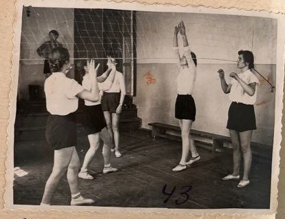
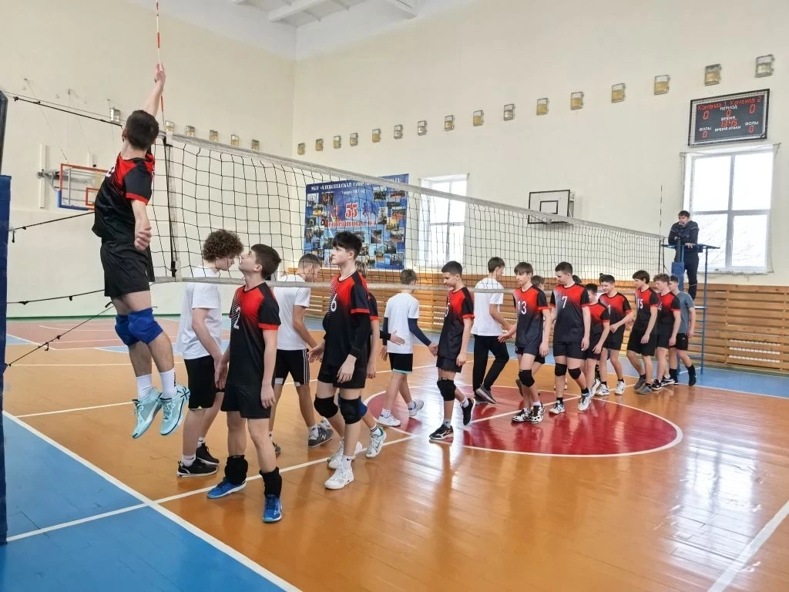
Развитие физкультуры и спорта в школе
До 1955 года в Алексеевской средней школе № 2 никаких спортивных сооружений не было, кроме волейбольной площадки. Из спортивного инвентаря в школе были только перекладина и несколько пар лыж.
В октябре 1955 года силами учащихся и учителей было начато строительство зала на месте кладовой в здании № 2. Строительство велось с большим энтузиазмом. Учащиеся под руководством специалистов вывели фундамент, сложили стены, собрали несколько тонн металлолома для обмена на рельсы для перекрытий. К 1 января 1956 года сооружение было закончено.
Весной 1957 года по инициативе комитета ВЛКСМ и совета коллектива физкультуры в школе было начато строительство школьного стадиона. Стадион решили строить на месте карьера, который расположен в 50 метрах от школы. После того как бульдозерами была расчищена площадка для стадиона, учащиеся и учителя школы приступили к строительству спортивных сооружений. За 1957–1959 годы необходимые спортивные сооружения на стадионе были возведены. Учащимися за эти годы было проведено также озеленение стадиона. Создание хорошей спортивной базы в школе способствовало значительному росту числа занимающихся спортом.
В 1956 году в школе был проведён первый школьный праздник, который стал ежегодным традиционным праздником весны. На школьных праздниках со смотром художественной самодеятельности классов проходили сборные соревнования учащихся.
Школа ежегодно участвует в различных спортивных соревнованиях, показывая значительные спортивные достижения. Команда стрелков школы ежегодно занимает первое место в районе. Лучшими физкультурниками школы за 1956–1960 годы были следующие учащиеся: Лакеева Л., Куличенко Р., Кочин Г., Мартыненков Б., Барышникова В., Дубинская Л., Василенко П.
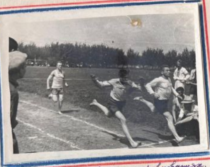
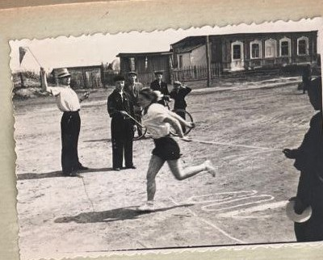
Ежегодный турнир памяти Д. А. Лытнева
Указом Президента РФ от 03.03.2022 Дмитрий Александрович Лытнев награжден орденом Мужества (посмертно).
Каждый год школа проводит турнир по волейболу, посвященный памяти участника СВО Д. А. Лытнева.
В соревнованиях участвуют 6–11 классы, а поддержать команды приходят выпускники.
Главная идея турнира — уважение к человеку и сохранение преемственности поколений.
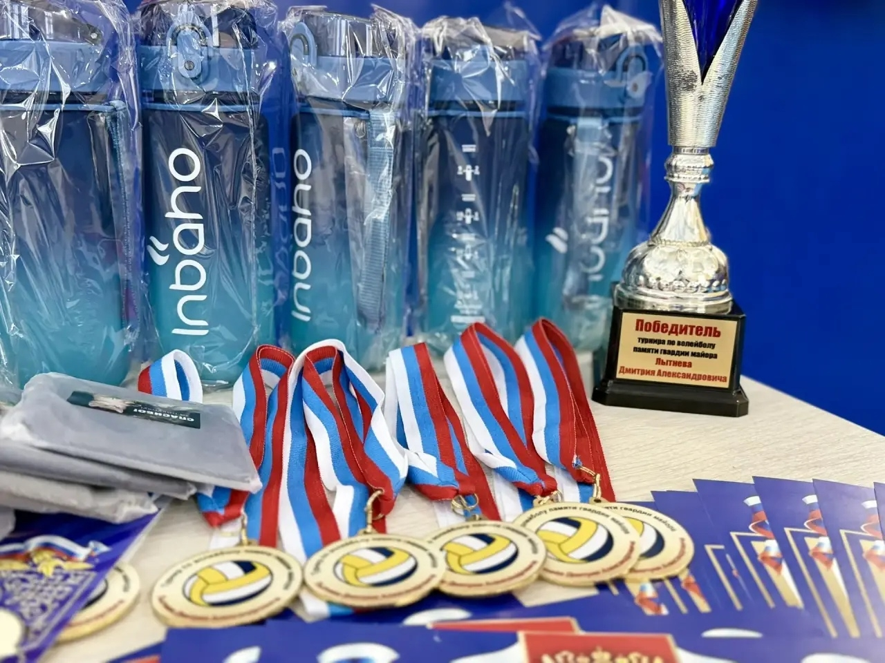
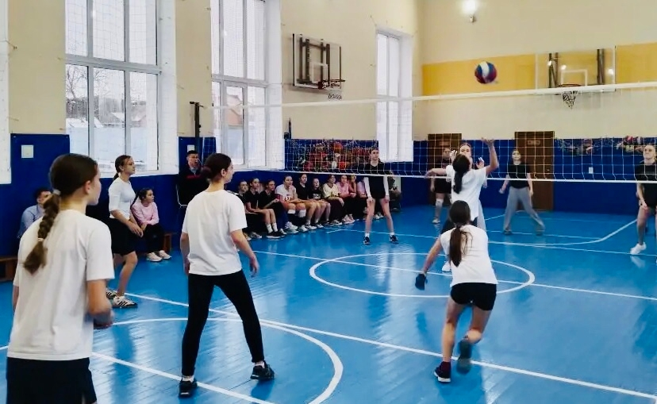
Турнир по лапте в честь К. Е. Фисенко
Указом Президента РФ от 30.12.2022 Кирилл Евгеньевич Фисенко награжден орденом Мужества (посмертно).
Во внутришкольном турнире по лапте участвуют команды 6–11 классов. Школьники соревнуются за переходящий кубок,
а сами соревнования развивают командный дух, выносливость и спортивную культуру.

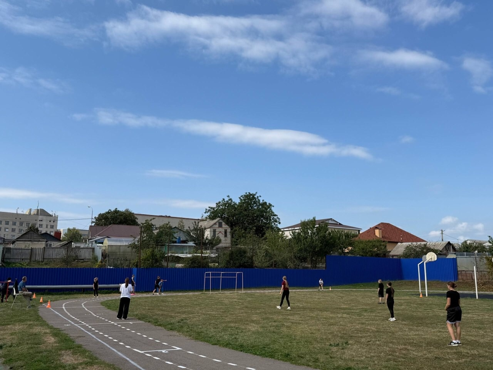
Выдающиеся выпускники и спортсмены
Александр Ковалев — чемпион Кубка мира ISSF
В октябре 2025 года на соревнованиях в Нью-Дели (Индия) Александр Ковалев завоевал золотую медаль среди
юниоров (скорострельный пистолет, 25 м) и серебряную медаль в упражнении на 60 выстрелов.
Школа гордится выпускником: его пример доказывает, что настоящий чемпион может вырасти в обычной школе.
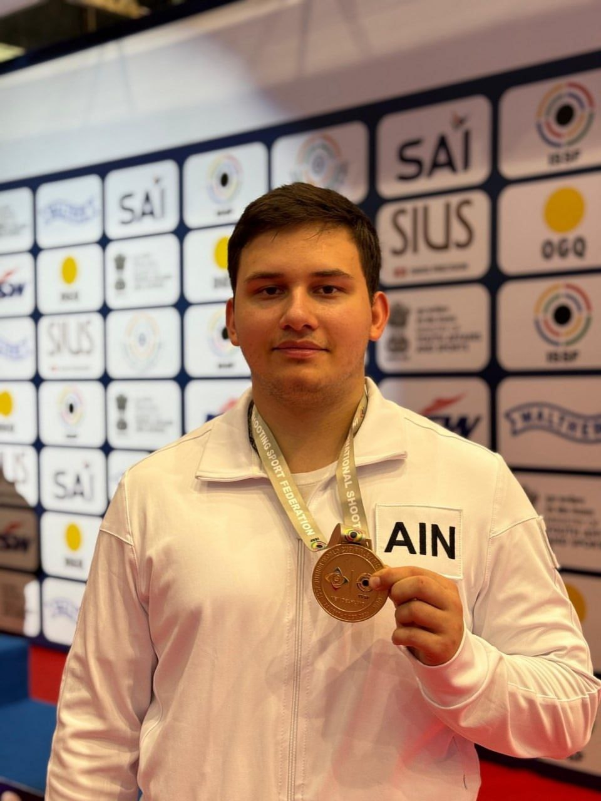
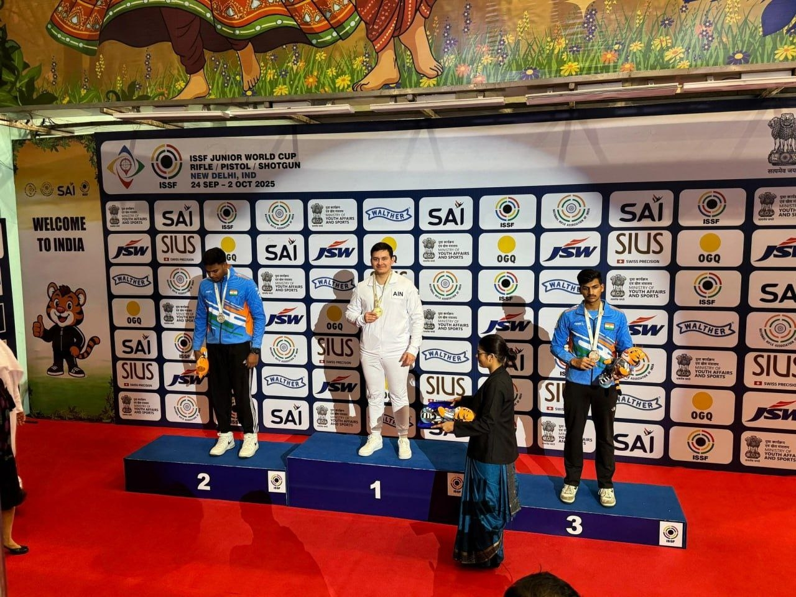
Попов Анатолий — достижения в боксе
- 2019: победа на первенстве России среди юношей 13–14 лет.
- 2020: бронза первенства Европы в Софии (категория до 54 кг).
- 2023: победа на турнире «Гран-при Тулы», подтверждение звания мастера спорта России.
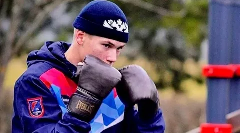
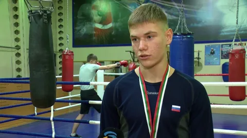
ГТО: традиции и победы
ГТО, октябрь 2004
Команда школы заняла I место в многоборье ГТО.
- Байбакова Анжела (7Б) — II место в личном зачете.
- Шевченко Игорь (5А) — I место в личном зачете.
- Колодина Екатерина
- Праченко Антон
- Прачев Владимир и другие участники команды.
Фестиваль ГТО, 2025
19 мая команда ОГБОУ «Алексеевская СОШ» заняла первое место в фестивале ГТО.
В личном зачете отличились: Пономаренко Илья (1 место), Белоусова Софья (2 место), Дронова Лидия (1 место),
Жильцов Игнат (2 место).
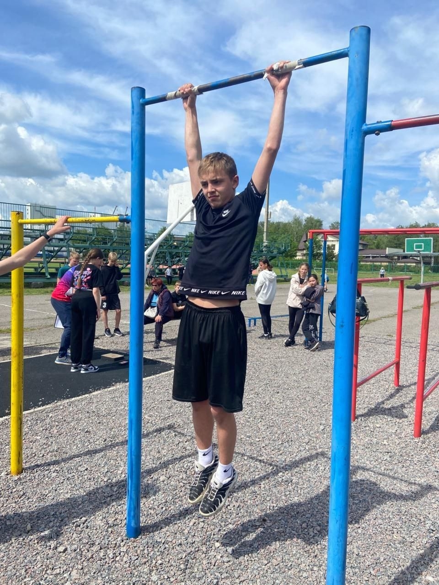
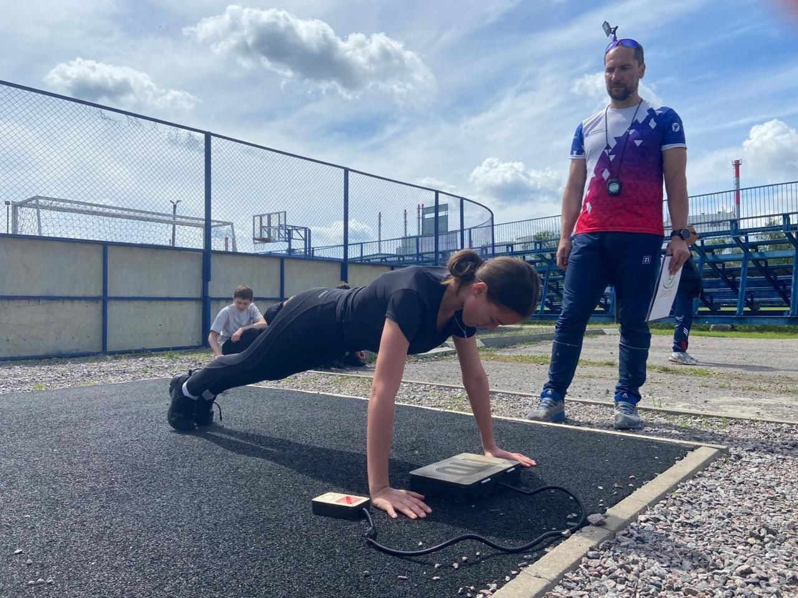
Зарница и военно-спортивные игры
Зарница 2.0 (18 мая 2024)
Команда ОГБОУ «Алексеевская СОШ» достойно представила Алексеевский округ на региональном этапе. Участники
демонстрировали навыки в дисциплинах военно-патриотической игры.
Зарница для 5–6 классов
Команда «Рота 31» заняла 1 место. Ребята успешно прошли строевую подготовку, медицину, эстафеты и викторину.
Игра «Герань»
На муниципальном уровне команда школы заняла 1 место и вышла на региональный этап, где среди 45 команд
заняла 13 место.
Сравнение: лапта 2008–2009 и 2025
2008–2009
В 51-й городской спартакиаде по легкой атлетике команда юношей заняла 1 место, команда девушек — 3 место.
Это стало важной базой для дальнейшего роста школьного спорта.
2025
На муниципальных соревнованиях по лапте (22–25 сентября) команды школы заняли 1 место среди юношей
и 1 место среди девушек.
Сравнение показывает стабильный рост подготовки и сохранение сильных спортивных традиций школы.
Другие спортивные успехи 2025 года
-
Пулевая стрельба: 18 февраля сборная ОГБОУ «Алексеевская СОШ» победила в открытом первенстве
Алексеевского муниципального округа.
-
Волейбол: сборная юношей школы стала победителем 67-й муниципальной спартакиады школьников.
Лучшим игроком турнира признан Михайловский Арсений (10 «А» класс).
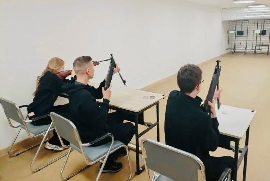
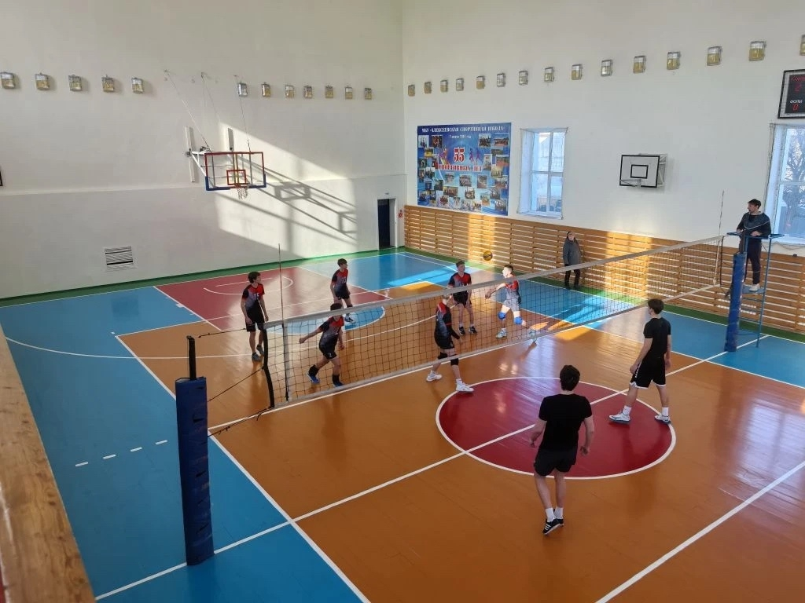
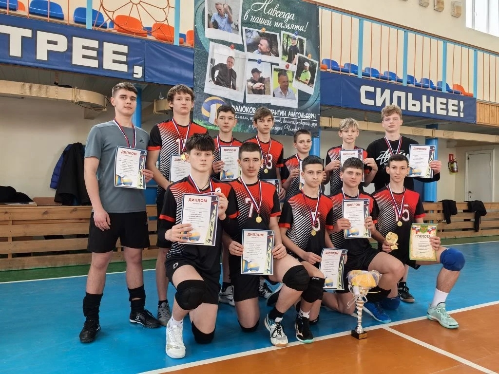
Заключение
Спорт и активные мероприятия делают школу не только местом учебы, но и настоящим сообществом. Ученики разных
возрастов вовлечены в спортивную жизнь, участвуют в соревнованиях, учатся взаимопомощи и дисциплине.
Регулярные соревнования помогают снижать стресс, укрепляют здоровье и дарят школьникам общие победы,
которые надолго остаются в памяти.
Наша школа — за здоровый образ жизни, традиции и новые победы.